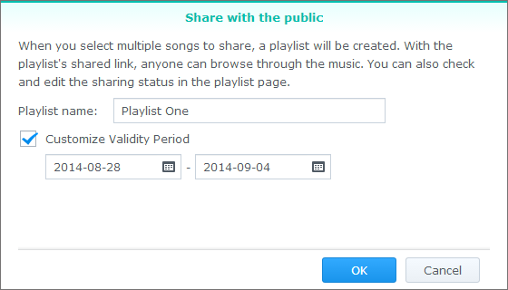

Genel Bakış
Audio Station ile, Synology NAS sunucunuzda saklanan müziği internet üzerinden organize edebilir, tarayabilir ve yürütebilirsiniz. Audio Station ayrıca çok çeşitli dosya tiplerini desteklediğinden her formatta müziğin keyfine istediğiniz şekilde varabilirsiniz. Ayrıca hareket halindeyken Synology NAS'ınızda saklanan müziğe erişmenizi sağlayan Audio Station'u tamamlayan bir mobil uygulama olan DS Audio'yu da indirebilirsiniz.
1. Audio Station Yükleme
- Audio Station'ı bulmak için Paket Merkezi'ne gidin. Kur'a tıklayın.

2. Müzik Dosyalarını müzik klasörüne saklama
- File Station > music konumuna gidin ve Karşıya Yükle üzerine tıklayın.
- Yerel bilgisayarınızdan music klasörünüze yüklemek istediğiniz dosyaları seçin.

3. Müziğe Gözatın
Müzik dosyalarını yükledikten sonra, Audio Station üzerinde müziğinizi çalabilir ve tarayabilirsiniz. Yerel ağınızda bulunmadığınızda müzik dosyalarınıza erişip göz atabilmeyi istiyorsanız, Denetim Masası > QuickConnect konumunda QuickConnect'i etkinleştirmeniz önerilir. Bir Synology Hesabınız yoksa, bir tanesini dakikalar içinde oluşturabilir ve ardından DiskStation sunucunuza bir QuickConnect ID verebilirsiniz. Bu seçenek etkinleştirilmiş haldeyken, DSM'de oturum açabilir ve müziğinize her yerden erişebilirsiniz. Ayrıca IP adresinizi hatırlama zahmetine girmeden DS Audio'da oturum açmak için QuickConnect ID'nizi de kullanabilirsiniz.
3.1 Kitaplık
Kitaplık music paylaşımlı klasöründeki veya Synology NAS'ınızın diğer indekslenmiş klasörlerindeki müziği içerir. Kitaplık sekmesinde, ihtiyaçlarınıza ve tercihlerinize göre müziğinize kolayca göz atmak için size farklı seçenekler sunmak üzere müziğiniz kategorilere ayrılır. Bunun yanında, aradığınız şarkıları kolayca bulmanızı da sağlar. Aramanızı yapmak için her bir kategoriye tıklayabilir veya arama çubuğundaki açılır menüden arama yapmak istiyorsanız kategoriyi seçebilirsiniz.

3.2. Görüntüleme modları
Audio Station'un sağ üst köşesindeki simgeler, içinde müzik kitaplığınıza gözatabileceğiniz farklı görüntüleme modları arasında geçiş yapmanızı sağlar.
- Liste görünümü şarkının adını, sanatçıyı, albümü, şarkının süresini, parça numarasını ve derecesini görüntüleyerek müziğinizi bir liste halinde görüntülemenizi sağlar.
- Sanat eseri parça adını, albüm adını ve albüm ağını görüntüler.
- Çalma Kuyruğu çalma kuyruğunu tam ekranda albüm kapaklarıyla ve şarkı adlarıyla veya şarkı sözleriyle görüntüler.


4. Genel Paylaşım
Audio Station'un genel paylaşım işlevi ağınızda olmayan ya da bir Synology NAS'a sahip olmayan kişilere gönderebileceğiniz bir bağlantıyı size sunarak şarkıları herkesle paylaşmanıza olanak tanır. Bağlantıya sahip olduklarında, şarkıları dinleyebilirler.
4.1. Şarkıları herkesle paylaşma
- Paylaşmak istediğiniz şarkı(lar) üzerine sağ tıklayın ve Herkesle paylaş öğesini seçin.
- Şarkıları herkesle paylaşırken iki seçenek vardır:
- Paylaşmak üzere bir şarkı seçerseniz, beliren iletişim kutusunda, paylaşım bağlantısını etkinleştirmek için Herkesle paylaş yanındaki kutuyu işaretleyin.
- Birden fazla şarkı seçerseniz, bir çalma listesi oluşturur. Geçerlilik Süresini Özelleştir yanındaki kutuyu işaretleyerek ve Tamam'a tıklayarak bağlantı için bir geçerlilik süresi belirleme seçeneğine sahip olmanın yanında çalma listenizi de adlandırabilirsiniz. 

- Bağlantıyı kopyalayın ve çalma listesini paylaşmak istediğiniz kişiye yapıştırın ya da bağlantıyı doğrudan ziyaret etmek için Bağlantıya git üzerine tıklayın.

5. Mobil Cihazlarda Müziği Organize Edin ve Yürütün
DS audio iPad/iPhone/iPod touch, Android cihazlar ve Windows Phone'lar üzerinde çalışır. Uygulama Apple App Store, Google Play ve Windows Phone Store'da ücretsiz olarak sunulmaktadır. Ayrıca doğrudan indirmek için aşağıdaki QR kodunu tarayabilirsiniz.